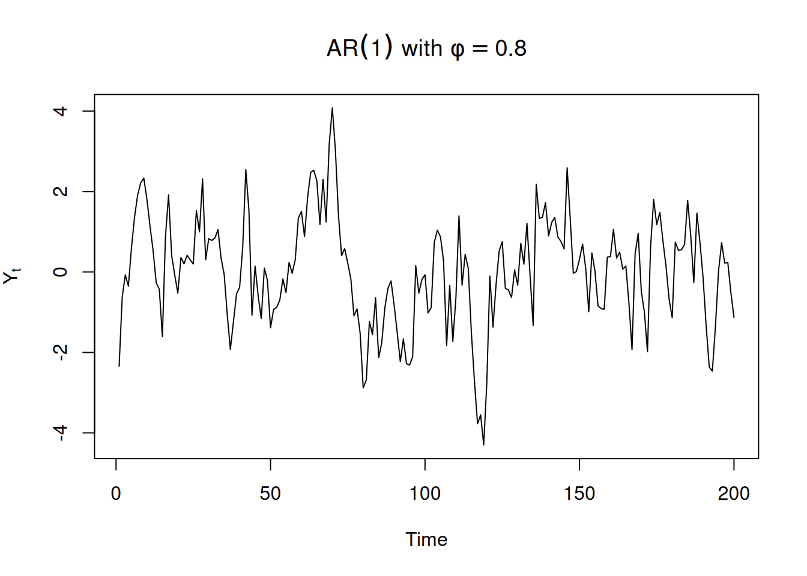
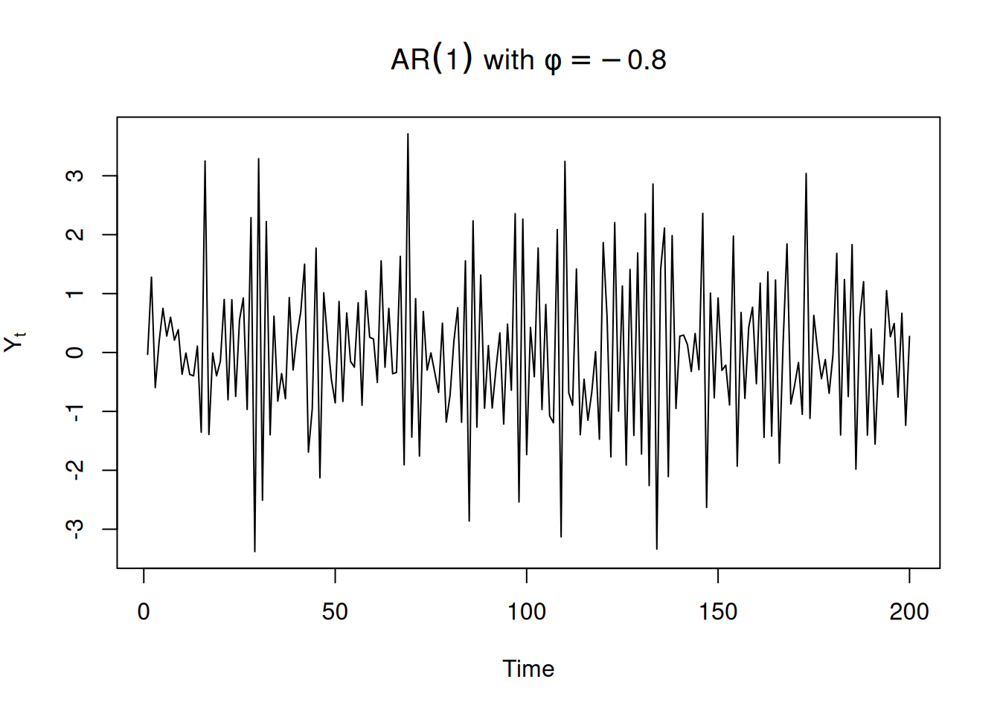
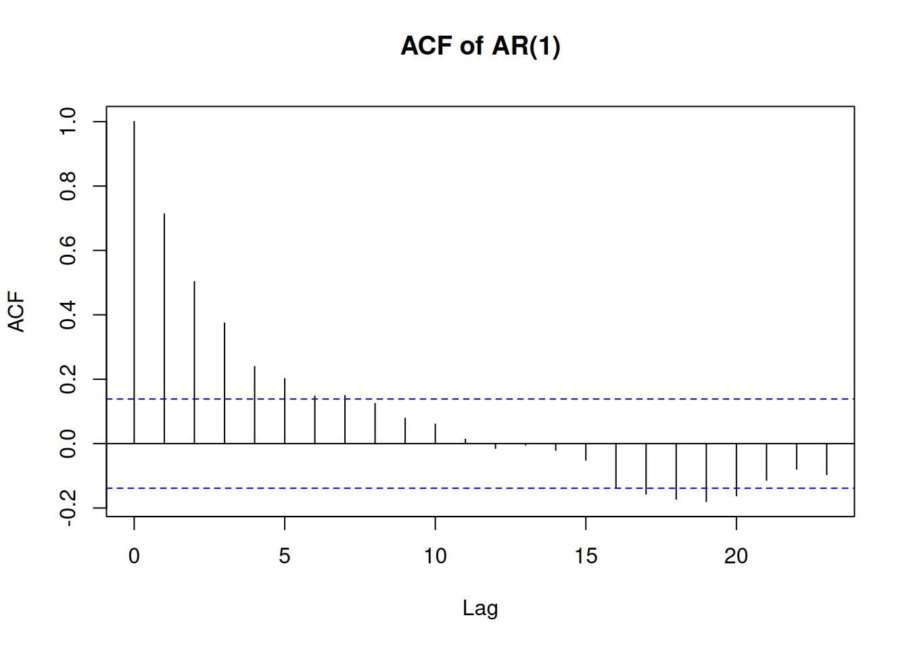
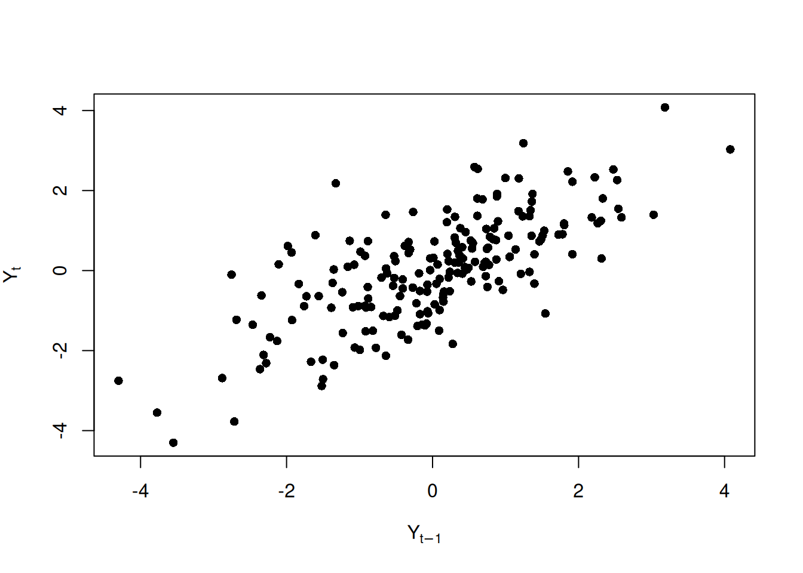
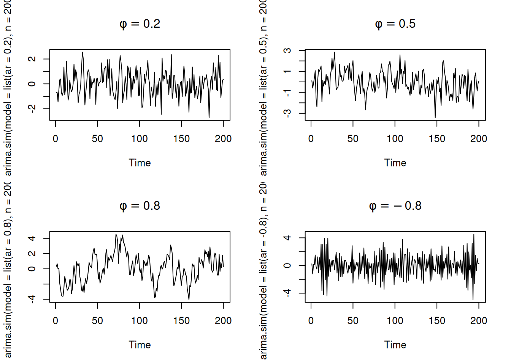

set.seed(123)
ar1 <- arima.sim(
model = list(ar = 0.8),
n = 200
)
plot.ts(
ar1,
main = expression(AR(1)~with~phi==0.8),
ylab = expression(Y[t])
)
The AR(1) model is the simplest and most important autoregressive model.
In an AR(1) process, the current observation depends on the immediately preceding observation and a random error.
The model serves as a foundation for understanding higher-order autoregressive models and many forecasting methods.
An AR(1) process is defined by
\[ Y_t=\phi Y_{t-1}+\varepsilon_t, \]
where
The parameter \(\phi\) determines the strength of dependence between consecutive observations.
The AR(1) process is stationary if
\[ |\phi|<1. \]
If
\[ |\phi|\ge 1, \]
the process is nonstationary.
| Value of \(\phi\) | Interpretation |
|---|---|
| \(0\) | White noise |
| \(0.3\) | Weak dependence |
| \(0.8\) | Strong persistence |
| \(-0.8\) | Alternating behavior |
| \(1\) | Random walk (nonstationary) |
Taking expectations,
\[ E(Y_t) = \phi E(Y_{t-1}). \]
Under stationarity,
\[ E(Y_t)=\mu. \]
Therefore,
\[ \mu=\phi\mu. \]
Hence,
\[ \mu=0. \]
Since
\[ Y_t=\phi Y_{t-1}+\varepsilon_t, \]
the stationary variance is
\[ Var(Y_t) = \frac{\sigma^2} {1-\phi^2}. \]
As \(|\phi|\) approaches 1, the variance increases.
For a stationary AR(1) process,
\[ \gamma(k) = \phi^{k}\gamma(0). \]
Since
\[ \gamma(0) = \frac{\sigma^2} {1-\phi^2}, \]
all autocovariances are determined by \(\phi\).
The ACF of an AR(1) process is
\[ \rho(k)=\phi^k. \]
This is one of the most important results in time series analysis.
If
\[ \phi=0.8, \]
then
\[ \rho(1)=0.8, \]
\[ \rho(2)=0.64, \]
\[ \rho(3)=0.512. \]
Thus the ACF decreases gradually toward zero.
For an AR(1) process,
\[ PACF(1)=\phi, \]
and
\[ PACF(k)=0, \qquad k>1. \]
Therefore the PACF cuts off after lag 1.
This property is widely used to identify AR(1) models.
set.seed(123)
ar1 <- arima.sim(
model = list(ar = 0.8),
n = 200
)
plot.ts(
ar1,
main = expression(AR(1)~with~phi==0.8),
ylab = expression(Y[t])
)
Observe the persistence of consecutive observations.
set.seed(123)
ar1neg <- arima.sim(
model = list(ar = -0.8),
n = 200
)
plot.ts(
ar1neg,
main = expression(AR(1)~with~phi==-0.8),
ylab = expression(Y[t])
)
Successive observations tend to alternate in sign.
acf(
ar1,
main="ACF of AR(1)"
)
The ACF decays geometrically.
This tailing-off behavior is characteristic of autoregressive processes.
pacf(
ar1,
main="PACF of AR(1)"
)
Only the first lag should be significant.
A lag plot reveals the dependence between \(Y_t\) and \(Y_{t-1}\).
plot(
x = ar1[-length(ar1)],
y = ar1[-1],
xlab = expression(Y[t-1]),
ylab = expression(Y[t]),
pch = 16
)
A positive linear pattern should be visible.
par(mfrow=c(2,2))
plot.ts(
arima.sim(model=list(ar=.2), n=200),
main=expression(phi==0.2)
)
plot.ts(
arima.sim(model=list(ar=.5), n=200),
main=expression(phi==0.5)
)
plot.ts(
arima.sim(model=list(ar=.8), n=200),
main=expression(phi==0.8)
)
plot.ts(
arima.sim(model=list(ar=-0.8), n=200),
main=expression(phi==-0.8)
)
Observe how the degree of dependence changes as \(\phi\) changes.
An AR(1) model can be estimated using maximum likelihood.
fit <- arima(
ar1,
order=c(1,0,0)
)
fit
Call:
arima(x = ar1, order = c(1, 0, 0))
Coefficients:
ar1 intercept
0.7235 -0.0239
s.e. 0.0491 0.2363
sigma^2 estimated as 0.8744: log likelihood = -270.73, aic = 547.46The estimated value of \(\phi\) should be close to the true value used in simulation.
For an AR(1) model,
\[ \hat{Y}_{t+1} = \phi Y_t. \]
More generally,
\[ \hat{Y}_{t+h} = \phi^h Y_t. \]
As \(h\) increases,
\[ \phi^h \rightarrow 0, \]
and forecasts approach the mean of the process.
If
\[ \phi>0, \]
large values tend to follow large values and small values tend to follow small values.
If
\[ \phi<0, \]
successive observations tend to move in opposite directions.
If
\[ \phi\approx 0, \]
the process resembles white noise.
The AR(1) process
\[ Y_t=\phi Y_{t-1}+\varepsilon_t \]
is the simplest autoregressive model.
Key properties:
These characteristics make AR(1) a fundamental model in time series analysis.
arima() and compare the estimated parameter with the true value.